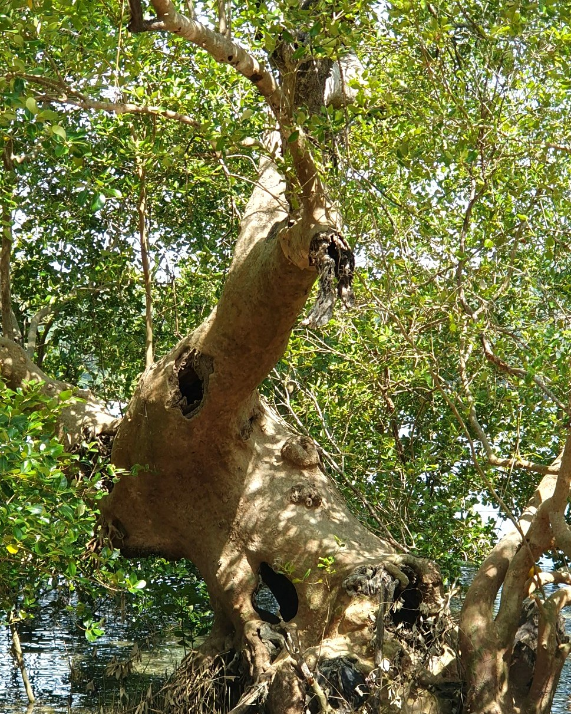

KnowledgeReady, powered by AILANG Parse
Turn your organization's collective knowledge into a competitive advantage.
Richer knowledge. More capable AI. More capable people.
KnowledgeReady helps organizations preserve and structure valuable information that conventional document processing may leave behind, giving existing AI applications a richer foundation to work from.
Your organization has accumulated years of knowledge through projects, decisions, correspondence and experience. Much of that knowledge lives in documents and communications, but valuable information about how it was created can be lost when those documents are prepared for AI. KnowledgeReady helps preserve more of that information so organizations can build on what they already know.
Explore the underlying AILANG Parse technology in the Sunholo Workbench.
Roots
The strongest foundations are built on everything you've learned.
Like the roots of a mature tree, an organization's knowledge grows deeper and stronger over time. Every project, proposal, contract, presentation, email conversation and working document contributes to its collective experience. Across years of activity, these records contain not only the final outcomes but also the discussions, revisions, decisions and learning that shaped them. Together, they form an invaluable foundation of organizational knowledge.
Yet conventional document processing can leave valuable information behind. KnowledgeReady extracts and structures richer information from supported enterprise documents, preserving elements such as:
Your organization's history is an asset. Make more of it accessible.

Trunk
Stronger foundations support more capable AI.
Just as a mature tree draws strength from its roots, enterprise AI depends on the quality and completeness of the information available to it. When documents are flattened or converted, important context can disappear before AI ever has an opportunity to use it.
KnowledgeReady works upstream of your existing AI systems. It processes supported native documents, extracting, preserving and structuring richer information for downstream applications — enterprise AI assistants and agents, retrieval-augmented generation (RAG), enterprise search and knowledge platforms, and document-dependent AI workflows. KnowledgeReady is not another AI platform. It strengthens the information entering the AI workflow you already have.
Preserve valuable document elements that other processing methods may overlook.
Process supported native Office files locally, with hosted API and enterprise deployment options also available.
Native document processing designed for low latency and large document volumes.
Better information in. Better AI out.
Branches
When knowledge becomes accessible, organizations can grow.
The branches of a mature tree represent growth, new possibilities and the ability to reach further. Organizations grow in much the same way, building on the experience, decisions and achievements of the people who came before. Imagine what becomes possible when employees can access not only what was decided, but also how and why.
KnowledgeReady helps create the information foundation. Your AI applications can help make that knowledge accessible to the people who need it.
The ultimate opportunity isn't simply more capable AI. It's more capable people.
What it preserves
See the difference richer document extraction can make.
Before information can contribute to an AI system, it must first be extracted from its source. KnowledgeReady processes supported native Office documents directly, preserving information that may be omitted by conventional conversion or extraction methods.
Capture comments, tracked changes and document structure to provide more context about how content evolved.
Extract slide content and speaker notes, making more of the presentation's underlying narrative available.
Preserve supported metadata and structural information that help downstream systems interpret extracted content.
Independently benchmarked on OfficeDocBench — 69 real Office files, 11 formats, 7 scoring dimensions, 17 features — against 8 other parsing tools.
AILANG Parse leads on every scoring dimension and is one of only two tools tested with 100% format coverage. Benchmark is open-source and reproducible — see full methodology and results on the AILANG Parse site. These results concern document extraction performance, not guaranteed improvements in downstream AI accuracy or business outcomes.
Start small. Prove it with your own documents.
You don't need to replace your AI platform to explore the value of richer document information. Start with a document where context matters — a presentation with speaker notes, a working document with comments and revisions, a proposal that evolved through several iterations.
See what KnowledgeReady extracts and consider what additional information your AI applications could use.
Opens the AILANG Parse Workbench from Sunholo. For more advanced evaluation, explore the API, MCP integration, local executable and enterprise deployment options.
I'd love to hear what you're working on.
Perhaps you're building an internal AI assistant, improving enterprise search, exploring how to preserve organizational knowledge, or looking for ways to help people make better decisions. Whether you're exploring possibilities, planning a project or already implementing an AI solution, I'd welcome hearing about what you're trying to achieve and where you are in the process.
Let's exchange perspectives on your use case.
Discuss your use caseRobert Alexander Johnson, KnowledgeReady Commercial Enquiries — knowledgeready@sunholo.com